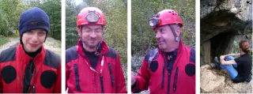

Maraş 2. Ön Araştırma Gezisi
 Maraş'ın Döngel Köyü'nde "Döngel Mağaraları" olarak bilinen sistem aslında birisi kısa ve aktif, diğeri ise dev gibi ve fosil iki mağara. 117 m uzunluğa sahip olan aktif kısım daha önce araştırılmış ve haritalanmıştı. Bu mağarada yeni bir kol bularak en az kendi uzunluğu kadar bir ilave yaptık. Bu aktif mağaranın üstünde yer alan ve anayoldan bile gözüken iki dev gibi ağıza sahip olan fosil kısmın ise şimdiye dek, kaba bir eskizden başka bir ölçümünün yapılmamış olması pek anlaşılır gibi değil. Buraya "Türkiye'nin en güzel mağaralarından birisi" demek abartı olmaz. Kelimelerle anlatılması pek kolay olmayan bu devasa mağarada, iki katlı ev büyüklüğünde kayalar arasında yolumuzu bulmaya çalışarak 3 gün boyunca ölçüm aldık ve harita çizdik.
Maraş'ın Döngel Köyü'nde "Döngel Mağaraları" olarak bilinen sistem aslında birisi kısa ve aktif, diğeri ise dev gibi ve fosil iki mağara. 117 m uzunluğa sahip olan aktif kısım daha önce araştırılmış ve haritalanmıştı. Bu mağarada yeni bir kol bularak en az kendi uzunluğu kadar bir ilave yaptık. Bu aktif mağaranın üstünde yer alan ve anayoldan bile gözüken iki dev gibi ağıza sahip olan fosil kısmın ise şimdiye dek, kaba bir eskizden başka bir ölçümünün yapılmamış olması pek anlaşılır gibi değil. Buraya "Türkiye'nin en güzel mağaralarından birisi" demek abartı olmaz. Kelimelerle anlatılması pek kolay olmayan bu devasa mağarada, iki katlı ev büyüklüğünde kayalar arasında yolumuzu bulmaya çalışarak 3 gün boyunca ölçüm aldık ve harita çizdik.

Bu, dört kişilik ve dört günlük ikinci araştırma gezisinin asıl amacı Keş Dağı Düdeni çalışması sırasında bölgeden alınan diğer ihbarları incelemekti. İlk olarak Afşin'in Emirilyas Köyü'nde bulunan Mağaragözü'ne gittik. Bu mağaraya mayıs ayında gittiğimizde çıkan su akıllara zarar miktarda idi. Bu defa kupkuru bulduk ve - ne yazık ki- kısa bir mesafe sonra birikinti su ile sifonladı. Ardından başlayan yağmur yüzünden diğer birkaç ihbarı başka bir geziye bırakarak Döngel Köyü'nde Karadaş Ailesi'ne misafir olduk. İyi ki de olmuşuz. Hem 3 gün boyunca inanılmaz bir misafirperverlikle ağırlandık, hem de civardaki tüm mağaralara baktık. Eyüp Karadaş ve ailesinin bunca zamandır bizlere gösterdiği yakınlık ve dostluk artık klasik "misafir" kavramını fersah fersah geride bırakmış durumda.
Döngel'de, Kılıç Kökten tarafından 1959 yılında bir deneme kazısı yapılan Yağlak Mağarası'nın da bunca yıl sonra tarafımızdan ölçülüp haritalanması gezinin diğer bir hoş yanı idi. Bu kısacık sürede aldığımız yeni ihbarlar ise, uzun yıllar boyunca burada olacağımızın ispatı gibi.